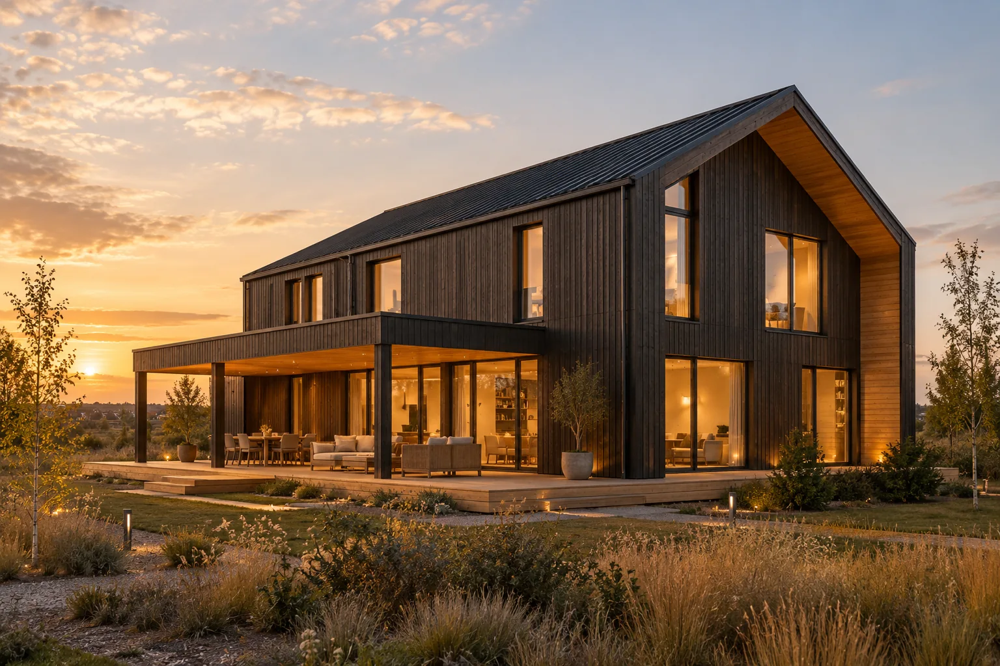
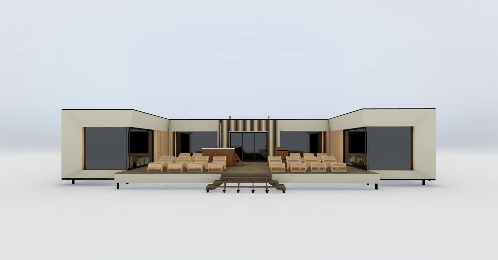

Ваша планировка
Сценарии жизни, комнаты и свет становятся основой проекта.


Модульные и CLT-дома.
Архитектура, материалы
и ваш образ жизни.
Начнём с участка, состава семьи и желаемой площади.
Соберём параметры для индивидуального предложения.
Ваш дом начинается с того, как вы хотите жить. Где собираться всей семьёй, работать в тишине и встречать друзей? Эти вопросы помогают определить планировку, расположение окон и связь дома с участком. Архитектуру, материалы и конструкцию рассматриваем вместе.
Деревянные панели с перекрёстным расположением слоёв.
Тепло дерева. Свет стекла.
Основательность камня.
От первых пожеланий до согласованного решения для вашего участка.
Сценарии жизни, комнаты и свет становятся основой проекта.
Архитектуру, материалы и комплектацию обсуждаем вместе.
От исходных данных к проекту, производству и монтажу.
Стоимость связываем с конкретными работами и материалами.
Сначала определяем задачу.
Затем превращаем её в проект.
Находим планировку и архитектуру под ваш участок, семью и привычный ритм жизни.
 АРХИТЕКТУРАДОМ
АРХИТЕКТУРАДОМОбсуждаем конструкцию, материалы и комплектацию дома перед началом производства.
Планируем доставку и монтаж. Условия участка и готовность основания учитываем заранее.
ПОНЯТНЫЙ ПРОЦЕССКАЖДЫЙСостав отделки и инженерных систем определяем в комплектации вашего проекта.
Под ваш участок
и привычный ритм жизни.
Соединяем конструкцию,
свет и природные материалы.
Воплощаем согласованные
решения в вашем доме.
Площадь — только начало. Уточним комплектацию, участок и ваши пожелания, чтобы обсудить стоимость предметно.
От конструкции к комфорту.
Шесть решений, которые
важно продумать вместе.
Прокручивайте: сначала сборка,
затем — детали технологии.
01CLT-панели состоят из слоёв древесины с чередующимся направлением волокон. В проекте важно согласовать толщину панелей, пролёты, проёмы и соединения — от этих решений зависит работа всего здания.
План этажей, нагрузки и узлы соединений.
Комфорт складывается из утепления стен и крыши, качества окон и герметичности стыков. Для постоянного проживания эти элементы подбирают вместе с отоплением и вентиляцией, с учётом климата участка.
Состав ограждающих конструкций, окна и отопление.
03Срок службы зависит не только от материала стен. Важны отвод воды, устройство кровли, защита торцов, примыкания окон и регулярный уход. Эти узлы стоит проверить до начала строительства.
Кровлю, водоотвод, фасад и правила эксплуатации.
04Расположение кухни, санузлов и технической зоны определяет трассы коммуникаций. Если предусмотреть их заранее, проще согласовать проходы через конструкции и доступ для обслуживания оборудования.
Воду, канализацию, электрику и вентиляцию.
Участок задаёт виды из окон, стороны света и вход в дом. Общую зону, спальни, хранение и террасу полезно рассматривать как один сценарий жизни — от утреннего света до вечерней приватности.
Состав семьи, привычки, ориентацию и сценарии комнат.
06Доставка и установка требуют места для подъезда и работы техники. Основание выбирают по условиям грунта и проектным нагрузкам; расположение коммуникаций согласуют до прибытия конструкций.
Подъезд, основание, зону разгрузки и последовательность работ.
Концепции для первого разговора.
Характеристики и планировку согласуем индивидуально.
Временные фотографии из открытых источников. Это примеры атмосферы, не работы IBR HOMES.
Фото: Adrien Olichon и Rachel Claire / Pexels. При недоступности источника показываем концепции из нашего демо.
Деревянные панели с перекрёстным расположением слоёв. Конструкцию, состав стен и характеристики выбранного решения обсудим на этапе проекта.
Да, пожелания можно включить в задание. Возможность конкретных изменений определяется конструкцией и проектом.
Состав фиксируется в предложении. Отдельно обсуждаем основание, доставку, монтаж, отделку и инженерные системы.
Для расчёта нужны параметры дома и участка. В форме можно указать площадь, комплектацию и желаемую дату. Подтверждённые стоимость и сроки команда сообщит после уточнения задачи.
Можно начать с пожеланий к дому. В заявке выберите «Выбираю участок» — это поможет понять, с какого этапа начать разговор.
Укажите место строительства и особенности подъезда. Способ доставки, состав монтажных работ и стоимость зависят от проекта и условий участка.
Условия финансирования и возможные варианты оплаты нужно уточнить у команды. На сайте нет утверждённой кредитной программы или обещания рассрочки.
Сайт готовит сообщение с вашими параметрами. Затем открывается WhatsApp, где вы сами нажимаете «Отправить». До этого команда не получает заявку.
Направление вращения
зависит от прокрутки.
